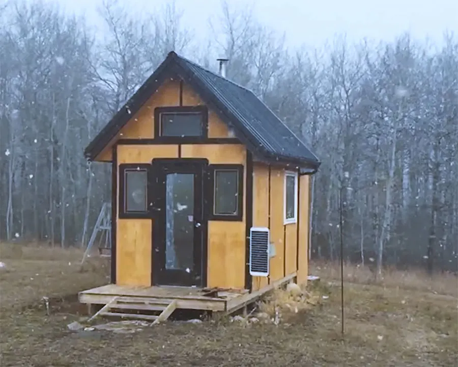
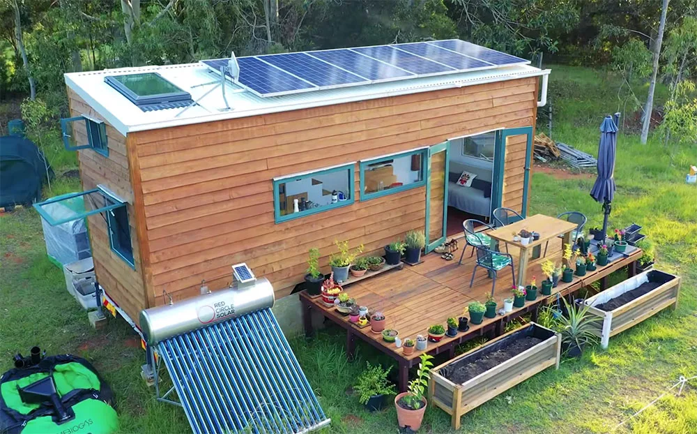
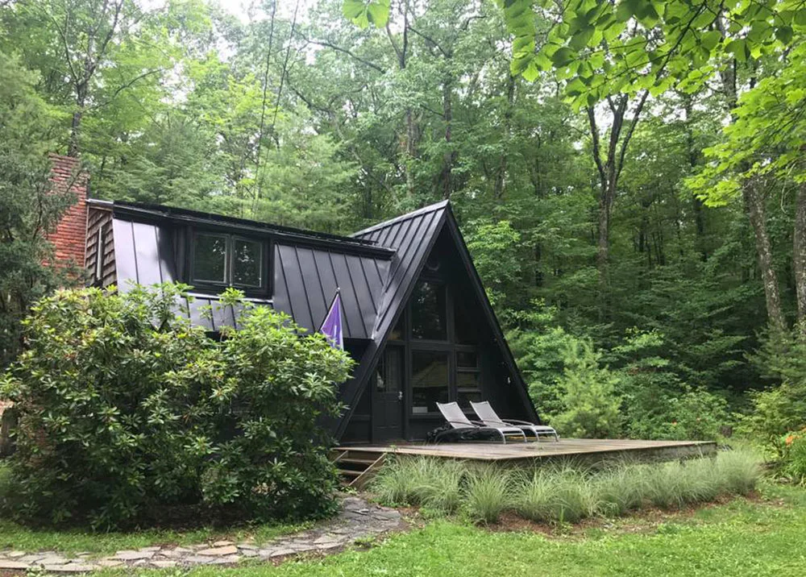
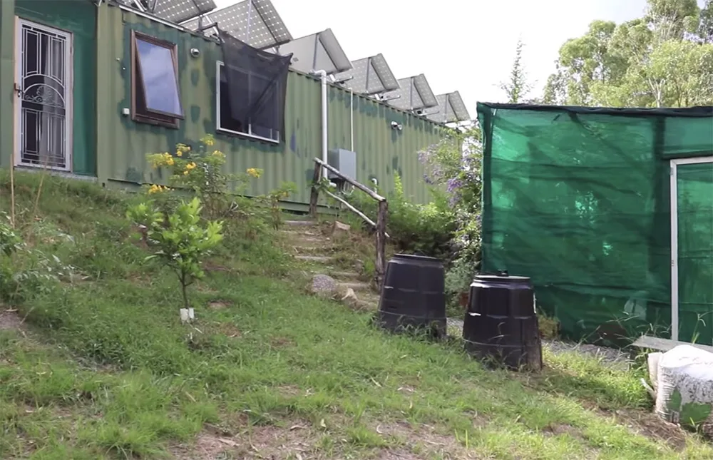

These People are living off the grid!
To help inspire you a bit, we’ve decided to show you some of our favorite stories of people who decided to leave their old lives behind and move off grid. They built their own homes, set up their own power and waste systems, and most grow their own food.
California Earthship – This couple built their beautiful 500-square-foot Earthship home for less than $10k. They knew nothing about construction before undertaking this project. They had a goal and learned along the way how to make it happen.

Cabin built in 12 days in Canada – This family’s off grid tiny cabin was built in just 12 days! Like many of the off grid homes we’ve featured, this cabin is built with many recycled materials to keep costs low.
Off grid tiny house in Australia – This house truly has it all. This family decided to go off grid and build a completely self-sustaining homestead with no prior experience.
Off grid A-frame in the Catskills – This A-frame in New York’s Catskill mountains is one of the most beautiful cabins we have featured. When we say off grid living doesn’t mean primitive living, this is a perfect example.
Joshua Tree shipping container home – We can’t talk about off grid homes without mentioning shipping containers! Shipping containers are the perfect building blocks for resilient sustainable homes.

Australia shipping container homestead – A couple in Australia downsized from their large suburban home and built their off grid homes out of 3 shipping containers.
